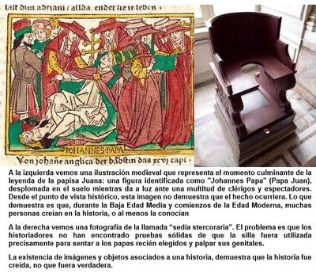

Pocas historias relacionadas con el cristianismo medieval han resultado tan sorprendentes, como la de una supuesta «papisa Juana». Según cuentan, una mujer extraordinariamente inteligente, que habría logrado hacerse pasar por hombre durante años, ascender en la jerarquía eclesiástica, y llegar nada menos que al mismo «trono de San Pedro». Y el relato culmina de forma dramática: durante una procesión por las calles de Roma, el papa no pudo seguir ocultando que era mujer, cuando dio a luz inesperadamente ante una multitud horrorizada.


Para muchos críticos de la Iglesia, especialmente entre los ateos y librepensadores, sería difícil resistirse al atractivo de una historia semejante. Después de todo, ¿qué mejor ejemplo de las contradicciones de una institución que durante siglos excluyó a las mujeres del sacerdocio, que descubrir que una de ellas habría llegado a convertirse en papa? Sin embargo, el deseo de que una historia sea cierta, no la convierte en verdadera. Y precisamente uno de los principios fundamentales del pensamiento crítico consiste en someter nuestras propias creencias y preferencias al mismo escrutinio que exigimos a los demás. Y cuando examinamos el caso de la papisa Juana desde la perspectiva histórica, encontramos una realidad mucho menos espectacular, pero mucho más interesante.
El principal problema de la leyenda es que los supuestos hechos habrían ocurrido en el siglo IX, entre los pontificados de los papas León IV y Benedicto III. Sin embargo, las primeras referencias detalladas a la papisa no aparecen sino hasta el siglo XIII, es decir, aproximadamente cuatrocientos años después. Y este enorme vacío temporal constituye una dificultad casi insuperable, para aceptar el relato como histórico. Si realmente una mujer hubiera gobernado la Iglesia y posteriormente hubiera dado a luz en plena vía pública mientras ejercía como papa, sería razonable esperar que semejante escándalo apareciera reflejado en las crónicas contemporáneas. Sin embargo, los documentos de la época guardan silencio. Y resulta especialmente significativo que ni los partidarios ni los enemigos del papado del siglo IX, mencionen un acontecimiento tan extraordinario. Es verdad, la Iglesia era muy poderosa como para silenciar muchas cosas, pero objetivamente, carecemos de evidencias que certifiquen la leyenda.
Y otro problema importante es la cronología: la leyenda suele situar a Juana entre la muerte de León IV y el inicio del pontificado de Benedicto III. Sin embargo, los registros históricos muestran que Benedicto III fue realmente elegido y reconocido como papa poco después de la muerte de León IV. Los documentos, monedas, cartas y listas episcopales de la época, no dejan un vacío de dos años donde pudiera encajar cómodamente el supuesto pontificado de Juana. Por lo que, para aceptar la leyenda, habría que asumir que una enorme cantidad de documentos fueron alterados o falsificados de manera coordinada en distintos lugares de Europa. Y aunque no es imposible modificar documentos históricos, una operación de tal magnitud habría sido extraordinariamente difícil en aquellos tiempos.
Pero hay otro indicio de que estamos ante una leyenda: los detalles varían según la versión. Algunos relatos afirman que Juana nació en Inglaterra, mientras que otros la sitúan en Alemania. En unas versiones muere durante el parto, pero en otras es ejecutada por la multitud. Algunas la presentan como amante de un monje; otras hablan de un funcionario o de un embajador. Incluso el nombre bajo el cual habría reinado cambia según distintas narraciones. Y es que cuando los relatos históricos proceden de fuentes fiables suelen presentar discrepancias menores, pero cuando los elementos fundamentales cambian constantemente de una versión a otra, suele ser señal de que estamos ante una tradición legendaria en proceso de evolución.
Por otra parte, tenemos la supuesta silla de inspección testicular. La leyenda de la papisa dio origen a otra historia igualmente famosa: la supuesta costumbre de verificar los genitales de los nuevos papas. Según el relato popular, después del escándalo de Juana, los pontífices eran sentados en una silla perforada mientras un clérigo comprobaba físicamente que poseían gónadas masculinas. Y tras la inspección se pronunciaba la frase latina: «Duos habet et bene pendentes» («Tiene dos y cuelgan bien»).
La historia es tan pintoresca, que se ha repetido innumerables veces en libros, documentales y artículos de divulgación. Y lo más curioso es que las sillas perforadas realmente existieron; el problema es que los historiadores no encuentran pruebas sólidas de que fueran utilizadas para esa finalidad. Las explicaciones más aceptadas apuntan a que formaban parte de antiguos rituales simbólicos relacionados con la humildad del pontífice y la continuidad institucional del papado. Mientras que la famosa frase latina sobre los genitales, tampoco aparece documentada en fuentes contemporáneas confiables.
¿Entonces de dónde surgió la leyenda? —Nadie lo sabe con certeza. Algunos historiadores creen que pudo originarse como una sátira política contra el papado. Otros sugieren que surgió a partir de confusiones relacionadas con personajes históricos reales. También se ha propuesto que reflejaba críticas populares a la corrupción y el poder eclesiástico. Lo que sí parece claro es que la historia se difundió ampliamente durante la Edad Media, y durante siglos muchas personas, incluyendo miembros del clero, creyeron que la papisa había existido realmente. Incluso llegó a aparecer representada en obras de arte y en listas papales elaboradas por algunos autores medievales. En la Catedral de Siena, por ejemplo, existió una representación asociada a la papisa Juana, una estatua con esta inscripción: «Johannes VIII, Foemina de Anglia» (Juan VIII, mujer inglesa). Sin embargo, esto no demuestra que la papisa existiera. Lo que demuestra es que muchos europeos medievales y renacentistas creían que había existido. Y posteriormente la inscripción fue modificada.
Pero al final seguimos sin pruebas fehacientes, porque la popularidad de una creencia no constituye evidencia de su veracidad. Si así fuera, también tendríamos que aceptar la existencia histórica de dragones, unicornios o innumerables milagros que gozaron de gran aceptación durante siglos. La historia de la papisa Juana, sin embargo, ofrece una enseñanza valiosa que va mucho más allá del cristianismo: muchos creyentes aceptan relatos extraordinarios, porque encajan con sus convicciones religiosas. Sin embargo, los ateos también podemos caer en la tentación de aceptar historias que parecen confirmar nuestras críticas a las instituciones religiosas.
Claro que sería muy atractivo demostrar que la Iglesia pasó siglos negando a las mujeres el acceso al sacerdocio, habiendo tenido una mujer en el trono papal. Sin duda sería una ironía histórica formidable. El problema es que las evidencias disponibles no permiten sostener esa conclusión. Y la actitud más coherente para quienes defendemos el pensamiento crítico, consiste en reconocer la diferencia entre lo que nos gustaría que hubiera ocurrido, y lo que realmente puede demostrarse.
La papisa Juana sigue siendo una de las leyendas más interesantes de la historia del cristianismo. Pero, a la luz de las pruebas disponibles, parece mucho más probable que pertenezca al mundo de los mitos medievales, que al de los hechos históricos. Resulta especialmente llamativa, porque demuestra que la Iglesia medieval no fue la única capaz de generar mitos. Sus adversarios, los cronistas populares e incluso algunos intelectuales, contribuyeron también a crear y difundir relatos que durante siglos fueron aceptados como verdaderos sin una base documental suficiente.
Pero la inexistencia histórica de Juana no elimina la crítica al papado medieval, ni la exclusión de las mujeres de los cargos eclesiásticos. Esos son hechos reales y ampliamente documentados. Sin embargo, no hace falta recurrir a una papisa legendaria, para cuestionar una institución que durante siglos reservó el poder religioso exclusivamente a los hombres.
En todo caso, la historia de la papisa Juana puede verse como una excelente lección sobre la diferencia entre una narración atractiva, y una conclusión respaldada por evidencias, una distinción que está en el corazón mismo del pensamiento crítico que tanto valoramos.
[Godless Freeman]
Comentarios
Comments powered by Disqus